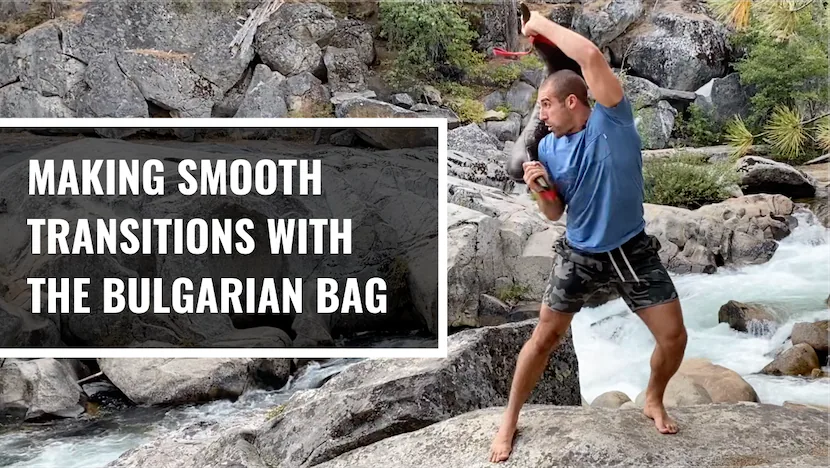

B258 · Missed golden moments in-between reps...
Hi {first_name},
As we progress in our movement practice, one of the things that is often overlooked as it relates to athleticism, fitness, and realizing performance potential is what takes place in the moments in-between repetitions.
Transitioning from one repetition to another, and even more so from one movement to another ( such as when we perform exercises in a sequential "flow-like" fashion ) often requires coordination, patience, rhythm, timing, agility and more.
When it comes to making smooth transitions, specifically with the Bulgarian Bag, there is one in particular that I find as a very effective standalone exercise that also serves as a great way to smoothly transition sides when performing the signature Spin movement.
 Click here to watch this week's new Youtube video.
Coined the Pummel, this has an excellent application for functional athletes of all types, however especially grapplers and combat athletes.
The vast majority of my training today happens with the Kettlebell (no surprise there haha ; ) and the Bulgarian Bag.
This is not by mistake.
They are among two of the very best, results-driven and fun training tools I've ever come across.
Click here to watch the full new Youtube video on making smooth transitions.
Wishing you a fantastic day enjoying breathing, moving, and simply being more in your body : )
Mike
P.S. If you would like to join a free Zoom community call, "The Training Room" that I hold nearly every Thursday, please respond to this email. I'll put you on the list so that when notifications go out for calls you can be informed. Currently, we've held over 6 great sessions with people from all over the world, getting their performance, fitness business, and holistic health questions answered. If you are unable to make the calls at 9:30am PST, I have a free Facebook group where you can watch an archive of the recordings. |